Qui sommes-nous ?
Who are we?
¿Quiénes somos?
Lire autrement, vivre pleinement.
Read differently, live fully.
Leer de otra manera, vivir plenamente.
NarAction est une association loi 1901 basée en Île-de-France. Elle propose des ateliers adaptés aux enfants, adolescents et adultes, qui peuvent se dérouler dans divers lieux (écoles, bibliothèques, jardins, etc.). Elle encourage une approche active et polyphonique de la lecture, invitant chacun à raconter sa propre vision du monde. Elle lutte contre le décrochage en lecture, le stress chronique et l'exclusion sociale à travers des ateliers immersifs de lecture subjective et inventive. En mobilisant l’hémisphère droit du cerveau, ces ateliers renforcent la motivation à lire, la créativité, le bien-être et l’inclusion. Ancrée dans une approche écologique de l’éducation, NarAction transforme la lecture en un espace de lien, d’expression et de transformation personnelle.
NarAction is a non-profit organization based in the Île-de-France region. It offers workshops tailored to children, teenagers, and adults, which can take place in various locations (schools, libraries, gardens, etc.). It encourages an active and polyphonic approach to reading, inviting everyone to share their own vision of the world. It combats reading dropout, chronic stress, and social exclusion through immersive workshops focused on subjective and inventive reading. By engaging the right hemisphere of the brain, these workshops boost motivation to read, creativity, well-being, and inclusion. Rooted in an ecological approach to education, NarAction transforms reading into a space for connection, expression, and personal transformation.
NarAction es una asociación sin ánimo de lucro con sede en Île-de-France. Ofrece talleres adaptados a niños, adolescentes y adultos, que pueden impartirse en diversos lugares (escuelas, bibliotecas, jardines, etc.). Fomenta un enfoque activo y polifónico de la lectura, invitando a cada uno a contar su propia visión del mundo. Lucha contra el abandono escolar, el estrés crónico y la exclusión social a través de talleres inmersivos de lectura subjetiva e inventiva. Al movilizar el hemisferio derecho del cerebro, estos talleres refuerzan la motivación para leer, la creatividad, el bienestar y la inclusión. Basada en un enfoque ecológico de la educación, NarAction transforma la lectura en un espacio de conexión, expresión y transformación personal.
Nos luttes principales
Our main struggles
Nos luttes principales
Décrochage en lecture
Reading dropout
Abandono escolar en lectura
Pour une motivation intrinsèque durable : une approche qui met l'expérience affective du sujet-lecteur (Langlade, 2004) en lien avec son environnement au centre de l'acte de lecture.
For lasting intrinsic motivation: an approach that places the emotional experience of the reader (Langlade, 2004) in relation to their environment at the center of the act of reading.
Por una motivación intrínseca duradera: un enfoque que sitúa la experiencia afectiva del sujeto-lector (Langlade, 2004) en relación con su entorno en el centro del acto de leer.
Stress chronique
Chronic stress
Estrés crónico
Nos ateliers favorisent une connexion plus profonde avec soi-même et les autres, tout en mobilisant l’imaginaire pour réinventer les possibles.
Our workshops promote a deeper connection with oneself and others, while mobilizing the imagination to reinvent possibilities.
Nuestros talleres favorecen una conexión más profunda con uno mismo y con los demás, al tiempo que movilizan la imaginación para reinventar las posibilidades.
Exclusion
Exclusion
Exclusión
Fondé sur l'approche écologique de l'éducation défendue par le paradigme inventif de l'éducation (Bertrand et Valois, 1981), adhérant à la posture éthique de la "troisième université" (La Paperson, 2017), nos ateliers valorisent les différences, la francophonie polyphonique ; encouragent le respect et l'amitié des peuples.
Based on the ecological approach to education advocated by the inventive paradigm of education (Bertrand and Valois, 1981), adhering to the ethical stance of the “third university” (La Paperson, 2017), our workshops value differences and polyphonic Francophonie, encouraging respect and friendship among peoples.
Basados en el enfoque ecológico de la educación defendido por el paradigma inventivo de la educación (Bertrand y Valois, 1981), y adhiriéndose a la postura ética de la «tercera universidad» (La Paperson, 2017), nuestros talleres valoran las diferencias, la francofonía polifónica, y fomentan el respeto y la amistad entre los pueblos.
Bibliothèque partagée
Accédez à une large collection de livres et partagez vos coups de cœur littéraires.
Ateliers de lecture
Participez à des ateliers collectifs pour découvrir et discuter de vos lectures.
Événements réguliers
Rejoignez-nous lors de nos rencontres mensuelles et événements spéciaux.
Communauté solidaire
Intégrez une communauté bienveillante de passionnés de lecture.
Activer les imaginaires, construire les possiblesStimulating the imagination, building possibilitiesActivar la imaginación, construir posibilidadesLire autrement pour résister au décrochage, au stress et à l’exclusion Reading differently to combat dropping out, stress, and exclusion Leer de otra manera para resistir el abandono escolar, el estrés y la exclusión |

|

|
NarAction : Éducation, Société, Santé, Environnement, Créativité NarAction: Education, Society, Health, Environment, Creativity NarAction: Educación, Sociedad, Salud, Medio ambiente, Creatividad Prévenir le décrochage scolaire, favoriser l'intégration sociale et la diversité culturelle, sensibiliser sur les enjeux environnementaux, soutenir le bien-être émotionnel et la créativité. Preventing school dropout, promoting social integration and cultural diversity, raising awareness of environmental issues, supporting emotional well-being and creativity Prevenir el abandono escolar, fomentar la integración social y la diversidad cultural, sensibilizar sobre los retos medioambientales, apoyar el bienestar emocional y la creatividad. |
Services Innovants
Innovative Services
Servicios innovadores
Ateliers et événements pour renforcer les compétences littéraires, soutenir la motivation intrinsèque en lecture, et promouvoir l'amitié des peuples et le bien-être émotionnel des participants.
Workshops and events to strengthen literary skills, support intrinsic motivation in reading, and promote friendship between peoples and the emotional well-being of participants.
Talleres y eventos para reforzar las competencias literarias, fomentar la motivación intrínseca por la lectura y promover la amistad entre los pueblos y el bienestar emocional de los participantes.
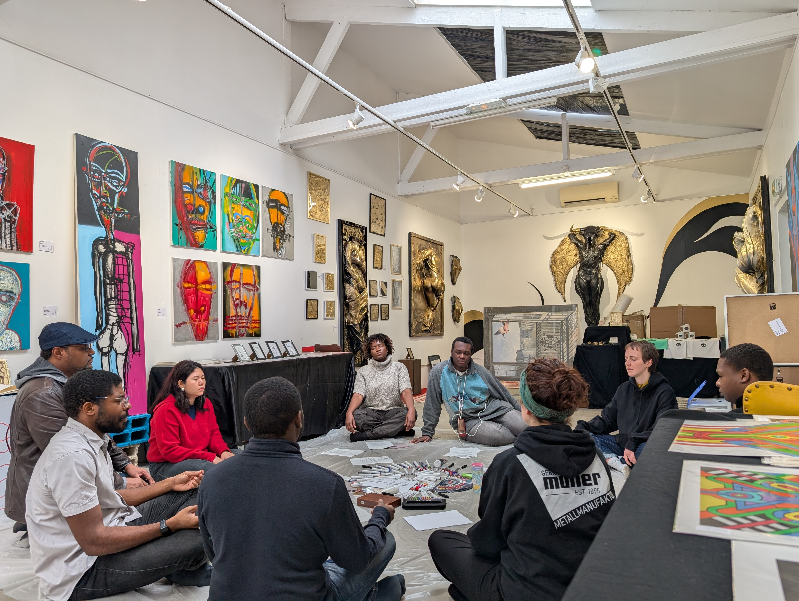
Ateliers ItinérantsTraveling WorkshopsTalleres itinerantesDes sessions immersives pour encourager la créativité collective et la diversité culturelle chez les jeunes. Immersive sessions to encourage collective creativity and cultural diversity among young people. Sesiones inmersivas para fomentar la creatividad colectiva y la diversidad cultural entre los jóvenes. |

Festival Terres de récitsTerres de récits FestivalFestival Terres de récits (Tierras de relatos)Événement célébrant la francophonie polyphonique, renforçant l’amitié des peuples et soutenant les histoires diverses. An event celebrating the polyphonic Francophonie, strengthening friendship among peoples and supporting diverse stories. Evento que celebra la francofonía polifónica, refuerza la amistad entre los pueblos y apoya la diversidad de historias. |

ICARE- solution entreprisesICARE - Business SolutionsICARE: solución para empresasDes ateliers immersifs sur mesure qui allient art, émotion, numérique et collectif pour transformer le bien-être en performance et impact durable. Customized immersive workshops that combine art, emotion, digital technology, and collective effort to transform well-being into performance and lasting impact. Talleres inmersivos a medida que combinan arte, emoción, tecnología digital y trabajo colectivo para transformar el bienestar en rendimiento y impacto duradero. |
Ateliers de lecture subjective et inventive
Subjective and inventive reading workshops
Talleres de lectura subjetiva e inventiva
Institutions académiques et autres acteurs éducatifs
Academic institutions and other educational stakeholders
Instituciones académicas y otros actores educativos
Soutenez la créativité, l'intelligence émotionnelle, l'intelligence intuitive et la motivation en lecture de vos élèves et/ou étudiant.e.s à travers nos ateliers de lecture innovants sur mesure.
Support your pupils' and/or students' creativity, emotional intelligence, intuitive intelligence, and motivation to read through our innovative, tailor-made reading workshops.
Fomente la creatividad, la inteligencia emocional, la inteligencia intuitiva y la motivación en la lectura de sus alumnos y/o estudiantes a través de nuestros innovadores talleres de lectura a medida.
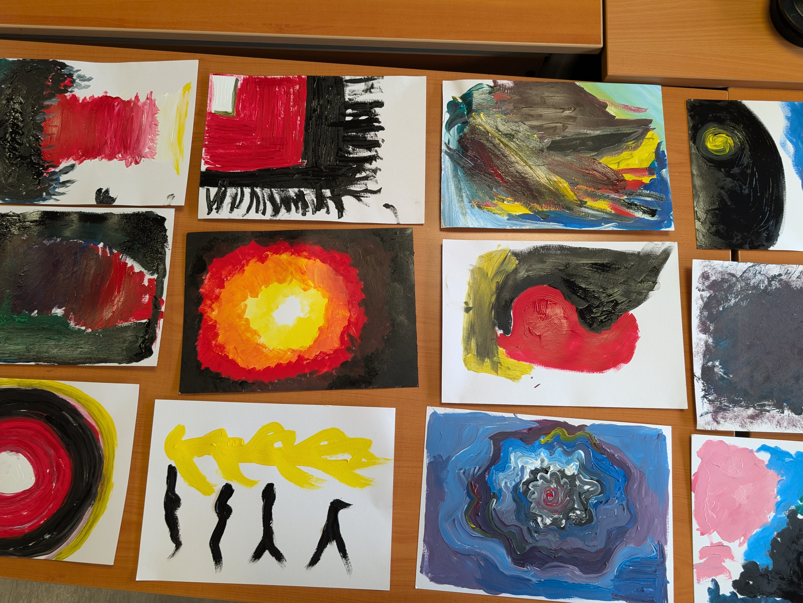Galerie
Gallery
Galería
Explorez la créativité et la diversité à travers nos ateliers.
Explore creativity and diversity through our workshops
Explora la creatividad y la diversidad a través de nuestros talleres.
|
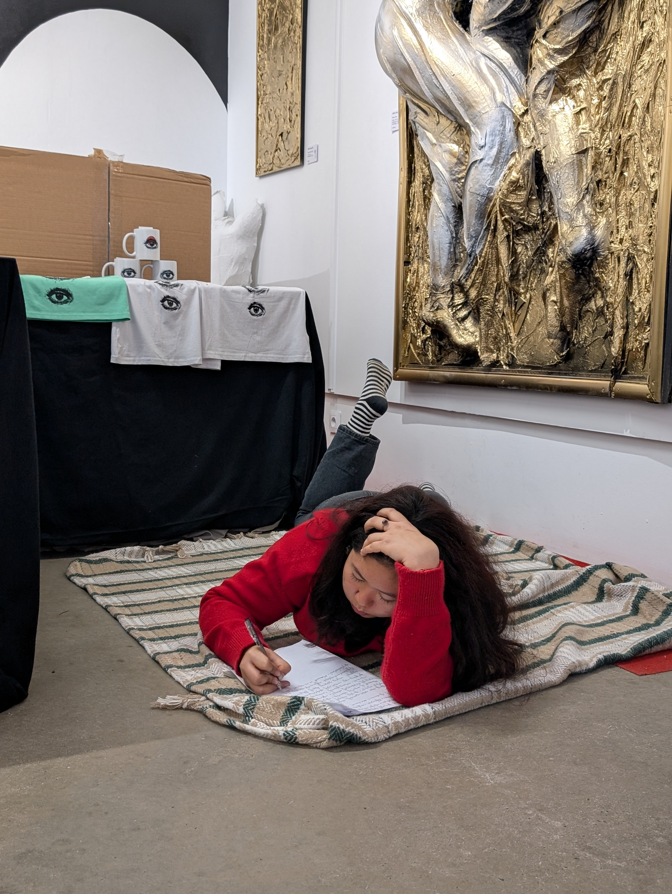
|

|

|
|
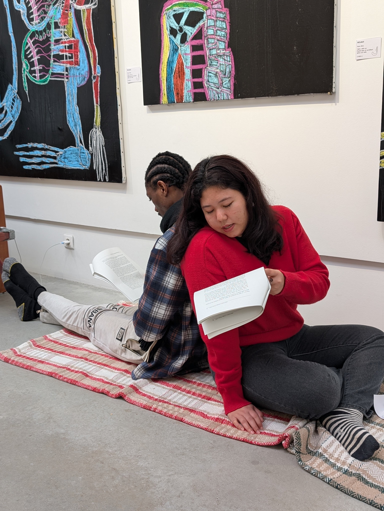
|
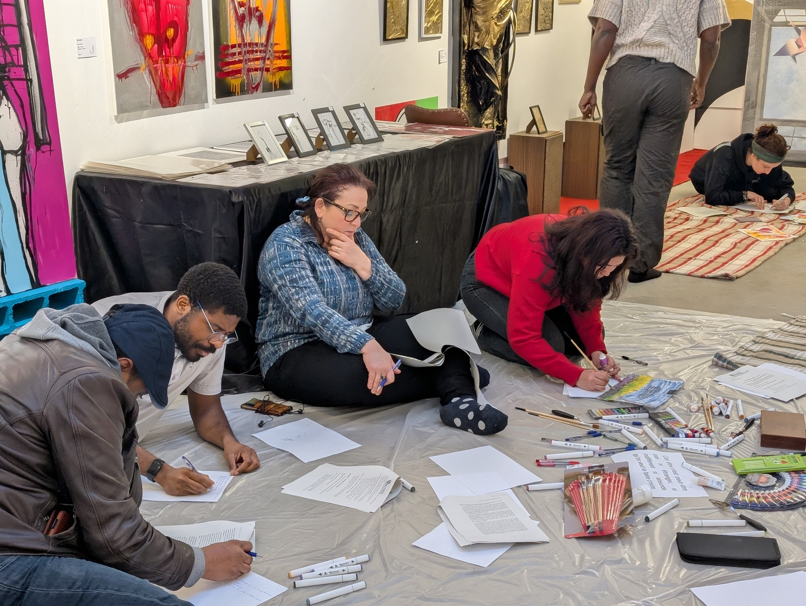
|

|
Composition du bureau
Board composition
Composición de la oficina
en un coup d’œil
at a glance
de un vistazo

|

|
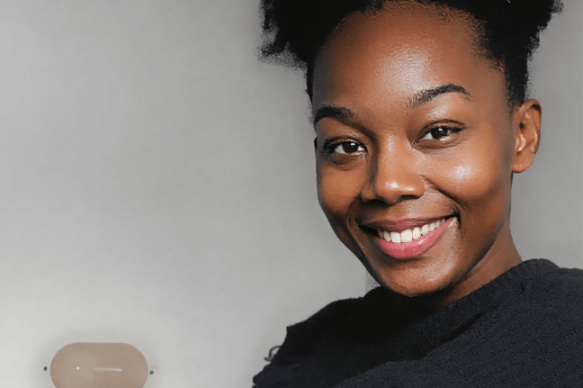
|

|
Jacob JEAN-JACQUESNé en 1988 à Petit-Goâve (Haïti) Maître en sciences de l’éducation Auteur, opérateur culturel, passeur de lecture Doctorant à l’Université Paris 8 – laboratoire FabLitt Lauréat du programme PAUSE du Collège de France Animateur d’ateliers en Haïti et en France depuis 2008 Jacob JEAN-JACQUESBorn in 1988 in Petit-Goâve (Haiti) Master's degree in Education Sciences Author, cultural operator, reading facilitator PhD student at Paris 8 University – FabLitt laboratory Winner of the Collège de France's PAUSE program Workshop facilitator in Haiti and France since 2008 Jacob JEAN-JACQUESNacido en 1988 en Petit-Goâve (Haití) Máster en Ciencias de la Educación. Autor, operador cultural, promotor de la lectura. Doctorando en la Universidad París 8 – laboratorio FabLitt. Ganador del programa PAUSE del Collège de France. Animador de talleres en Haití y Francia desde 2008. |
Eva Sales SALADAVice-Présidente Étudiante en L3 Études européennes et internationales (spécialité espagnol) à l’Université Paris 8. Parcours résilient et inspirant. Curieuse des enjeux culturels et diplomatiques. Déléguée de promotion. Co-fondatrice de NarAction. Eva Sales SALADAVice President Third-year student in European and International Studies (specializing in Spanish) at Paris 8 University. Resilient and inspiring background. Curious about cultural and diplomatic issues. Class representative. Co-founder of NarAction. Eva Sales SALADAVicepresidenta. Estudiante de tercer año de Estudios Europeos e Internacionales (especialidad en español) en la Universidad París 8. Trayectoria resiliente e inspiradora. Curiosa por los retos culturales y diplomáticos. Delegada de promoción. Cofundadora de NarAction. |
Wedzerline ALEXANDREDouble licence en comptabilité (Haïti, Université des Antilles – Martinique). Actuellement en master à l’IAE de Bordeaux. Stagiaire chez IN EXTENSO. Rigueur, esprit analytique, sens de l’organisation. Pilote la gestion financière de NarAction et contribue à la structuration des projets Wedzerline ALEXANDREDouble degree in accounting (Haiti, University of the Antilles – Martinique). Currently pursuing a master's degree at IAE Bordeaux. Intern at IN EXTENSO. Rigorous, analytical mind, organizational skills. Manages NarAction's finances and helps structure projects. Wedzerline ALEXANDREDoble licenciatura en contabilidad (Haití, Universidad de las Antillas – Martinica). Actualmente cursa un máster en el IAE de Burdeos. Becario en IN EXTENSO. Rigor, espíritu analítico, sentido de la organización. Dirige la gestión financiera de NarAction y contribuye a la estructuración de los proyectos |
Soukaina SAIDIJuriste, doctorante en droit médical et bioéthique à l’Université Paris 8. Secrétaire de l’association NarAction. Parcours entre le Maroc et la France. Spécialiste des croisements entre droit, santé et bioéthique. Expérience en cliniques juridiques, hôpitaux, tribunaux et cabinets. Soukaina SAIDILawyer, PhD student in medical law and bioethics at Paris 8 University. Secretary of the NarAction association. Career spanning Morocco and France. Specialist in the intersection of law, health, and bioethics. Experience in legal clinics, hospitals, courts, and law firms. Soukaina SAIDIJurista, doctoranda en Derecho Médico y Bioética en la Universidad París 8. Secretaria de la asociación NarAction. Trayectoria profesional entre Marruecos y Francia. Especialista en las intersecciones entre el Derecho, la salud y la bioética. Experiencia en clínicas jurídicas, hospitales, tribunales y bufetes. |
Partenaires
Partners
Socios
Découvrez nos précieux partenaires ici.
Discover our valued partners here.
Descubra aquí quiénes son nuestros valiosos socios.
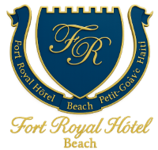


 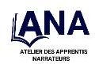
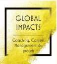
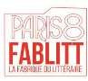
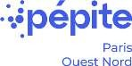
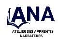
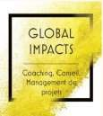
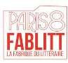
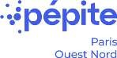